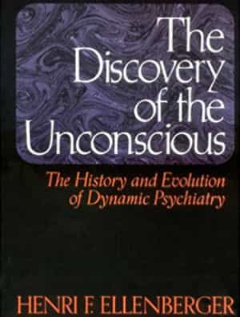

Intelligence is the extent to which we can abstract from particulars to create principles, and then apply these principles to new particulars. In other words, IQ measures pattern recognition and pattern application.
Though IQ is mostly determined by genetics, we can increase it with a concerted effort. Inadvertently, I concerted this effort. At least I think I did. Using corroborating evidence from the SATs, GREs, and the WAIS, I liberally estimate my IQ has increased by ten points over the past ten years.
Given the nature of intelligence, I think it’s the below books that contributed most to my encephalic enhancement. They don’t teach facts or theories as much as they teach the processes behind learning facts and forming theories. As a result, they offer the reader the ability to penetrate subjects that even smart people can only dance around through rote and repetition.
In A History Of Philosophy, Windelband considers the main epistemological schools that shaped philosophy before he considers philosophers. These two schools, empiricism and rationalism—which manifest today as liberals and conservatives, respectively—are the gears behind every turn of philosophy and so politics. When we understand culture as thought process and its axioms, as Windelband instructs, we inevitably think abstractly and apply abstractions—that is, we become smarter.
Instead of criticizing the SJWs as ugly morons, we say they’re rehashing the strict materialism of the early 19th Century—which was a revolt against the growing idealism—in a tribal framework and carrying it to its natural conclusions. It’s not only more correct, it’s more helpful.

A History of Philosophy may present the philosophy of belief, but Ellenberger presents the psychology of belief. It hurt my brain to read this book because in addition to thinking of an idea in terms of its truth, I began to think of an idea in terms of what it’s true of. This shift made me question myself more than ever before. Communism makes sense from a certain perspective; drug addiction makes sense from a certain perspective; changing your gender identity to work through childhood trauma makes sense from a certain perspective. It isn’t subjectivism, rather perspectivism.
This book has been criticized for not offering an original viewpoint on psychology but the originality of this book is its excellence in unifying themes throughout psychology’s development. As intelligence is abstraction, this book is intelligence with a seamless application.

Most people only know Rand for her ethical defense of the free market. Though these are sometimes stellar points, her genius isn’t fully palpable until she delves into epistemology. In Introduction to Objectivist Epistemology, Rand articulates the precise steps behind the crux of intelligence—the derivation of concepts from experience—thereby bridging the gap between the aforementioned rationalism and empiricism. It would be a big-deal idea if she’s correct, and she may not be, but every study about human vision and information processing since this book was written validates most of her points. Few know this because most of the people who study vision and processing have only read bits of Rand, and only with the intent to scoff.
Even though her solution to the problem of concepts may be lacking, it doesn’t matter. The intimate way in which she parses her intelligence invariably makes the reader more intelligent.
Intelligence is indeed pattern recognition and application, but to put this more practically, it’s the extent to which we can get what we want. This means understanding what it takes to navigate the basic challenges of the world, which requires we understand myths, the vehicles for this instruction.
Campbell’s book demonstrates that every myth—from every corner of the globe and from every era—is the same. They’re composed of a few, interchangeable parts. This is because our psychologies are the same, so how a man advances through the hierarchy of society is the same. Every man we would ever want to be is St. George slaying the dragon while protecting his fair maiden. Therefore, it’s good to know what the sword, dragon, and maiden represent. This blueprint makes us more intelligent by keeping us focused on what’s important when wading through the inevitable trivialities of life.
There are some honorable mentions. First is Beyond Good and Evil by Nietzsche, a distillation of the plight of 19th Century man, which inadvertently reveals a timeless plight. Second is The Undiscovered Self by Jung. Everyone is religious, so it’s important to question what our religion is and to what extent it’s useful. Last is Man’s Guide to Psychology, written by me. Writing it made me smarter, so maybe reading it will make you smarter too.
Read More: 5 Ground-Breaking Books Written Between 1918 and 1945.